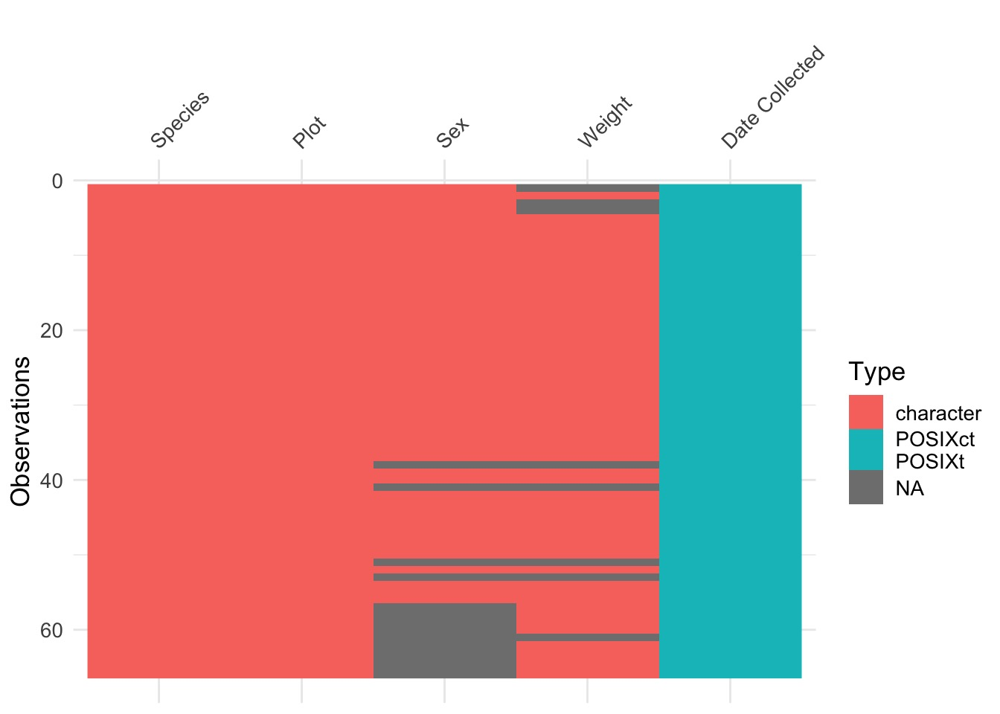

Wrangling and Cleaning Strings


Just Another Day Loading Data…
The Nigtmare Scenario

The Nightmare Scenario
Classes 'tbl_df', 'tbl' and 'data.frame': 66 obs. of 5 variables:
$ Species : chr "DM" "DM" "DM" "DM" ...
$ Date Collected: POSIXct, format: "2013-07-16" "2013-07-16" ...
$ Plot : chr "2" "7" "3" "1" ...
$ Sex : chr "F" "M" "M" "M" ...
$ Weight : chr NA "33g" NA NA ...What to Do?
- Deal with NA Values
- na handlers and filter
Diagnose remaining problems
- Remove unneeded characters
- string matching
- Basic regular expressions
- string matching
- Remove errant line spaces and other cruft
- More advanced regular expressions
Fix names
NAs
[1] TRUEUseful tool! Can work with filter!
If we want NAs to be 0…
This can be a horrible idea if NAs are real
Or, filter, if NA rows are not useful
BUT! Also not useful if we find that NA information is in other column
General Notes on NAs
- NAs are easy to filter out or replace
dplyr::filter()
na.omit()
- But, there may be info in NAs
- Info might hide in other columns!
Many functions have methods for handling NAs
BUT - NA values can propogate through functions if not careful
Filter NAs last, and only if they are actually a problem
What to Do?
- Deal with NA Values
- na handlers and filter
Diagnose remaining problems
- Remove unneeded characters
- string matching
- Basic regular expressions
- string matching
- Remove errant line spaces and other cruft
- More advanced regular expressions
Fix names
Diagnosis
What lines have problems?
Look at unique values in those lines
[1] "2" "7" "3" "1" "4" "8" "6" "17" "9" "20" "11" "14"Species
[1] "DM" "DO" "ds" "NA" "OL" "PE" "PF" "OT" "DS" "OX"
[11] "DM_F" "DS_F" "DM_M" "DO_M" "OL_M"Weight
[1] NA "33g"
[3] "40g" "48g"
[5] "29g" "46g"
[7] "36g" "35g"
[9] "22g" "42g"
[11] "41g" "37g"
[13] "52" "33"
[15] "50" "48"
[17] "31" "41"
[19] "44" "39"
[21] "40" "45"
[23] "117" "121"
[25] "115" "120"
[27] "118" "126"
[29] "132 (scale not calibrated)" "113 (scale not callibtrated)"
[31] "122" "107"
[33] "38" "22"
[35] "43" "35"
[37] "37" "7"
[39] "157" "218"
[41] "128" "42" Problems with unique?
Unique only works if a small numbe of unique entries
Need a more general tool
Can brute force to find bad entries
Brute force conversion
[1] 1 2 3 4 5 6 7 8 9 10 11 12 13 14 33 34 38 41 51 53 61Problems with conversion
Shows you which problems occur
Can then fix one by one
But, can’t show you which problems are systematic
What to Do?
- Deal with NA Values
- na handlers and filter
Diagnose remaining problems
- Remove unneeded characters
- string matching
- Basic regular expressions
- string matching
- Remove errant line spaces and other cruft
- More advanced regular expressions
Fix names
Finding Bad Strings
[1] NA TRUE NA NA TRUE TRUE TRUE TRUE TRUE TRUE TRUE TRUE
[13] TRUE TRUE FALSE FALSE FALSE FALSE FALSE FALSE FALSE FALSE FALSE FALSE
[25] FALSE FALSE FALSE FALSE FALSE FALSE FALSE FALSE FALSE FALSE FALSE FALSE
[37] FALSE NA FALSE FALSE NA FALSE FALSE FALSE FALSE FALSE FALSE FALSE
[49] FALSE FALSE NA FALSE NA FALSE FALSE FALSE FALSE FALSE FALSE FALSE
[61] NA FALSE FALSE FALSE FALSE FALSEWhat is the problem?
[1] "33g" "40g" "48g" "29g" "46g" "36g" "35g" "22g" "42g" "41g" "37g"UH OH! NA!
What is the problem
[1] "33g" "40g" "48g" "29g" "46g" "36g" "35g" "22g" "42g" "41g" "37g"Basic String Matching
- Can match on one letter or many letters
[1] "bananna"What about ANY character?
- Sometimes we want flexibility
[1] "apple" "bananna" "orange" a followed by any character
How do you match .?
[1] "apple." "bananna." "orange." Exercise
How would you match the sequence "’?
What patterns will the regular expression ...... match? How would you represent it as a string?
Beginning and End of Lines
First you get the power, then you get the money…
[1] "apple" "bananna" "orange" Beginning and End of Lines
First you get the power, then you get the money…
[1] "apple"Beginning and End of Lines
First you get the power, then you get the money…
[1] "apple" "orange"Exercise
Given the corpus of common words in stringr::words, create regular expressions that find all words that:
- Start with “y”.
- End with “x”
- Are exactly three letters long.
- Have seven letters or more.
Since these list are long, you might want to use the match=TRUE argument to str_view() to show only the matching or non-matching words.
Solutions
[1] "year" "yes" "yesterday" "yet" "you" "young" Solutions
[1] "box" "sex" "six" "tax"Solutions
[1] "act" "add" "age" "ago" "air" "all" "and" "any" "arm" "art" "ask" "bad"
[13] "bag" "bar" "bed" "bet" "big" "bit" "box" "boy" "bus" "but" "buy" "can"
[25] "car" "cat" "cup" "cut" "dad" "day" "die" "dog" "dry" "due" "eat" "egg"
[37] "end" "eye" "far" "few" "fit" "fly" "for" "fun" "gas" "get" "god" "guy"
[49] "hit" "hot" "how" "job" "key" "kid" "lad" "law" "lay" "leg" "let" "lie"
[61] "lot" "low" "man" "may" "mrs" "new" "non" "not" "now" "odd" "off" "old"
[73] "one" "out" "own" "pay" "per" "put" "red" "rid" "run" "say" "see" "set"
[85] "sex" "she" "sir" "sit" "six" "son" "sun" "tax" "tea" "ten" "the" "tie"
[97] "too" "top" "try" "two" "use" "war" "way" "wee" "who" "why" "win" "yes"
[109] "yet" "you"Solutions
[1] "absolute" "account" "achieve" "address" "advertise"
[6] "afternoon" "against" "already" "alright" "although"
[11] "america" "another" "apparent" "appoint" "approach"
[16] "appropriate" "arrange" "associate" "authority" "available"
[21] "balance" "because" "believe" "benefit" "between"
[26] "brilliant" "britain" "brother" "business" "certain"
[31] "chairman" "character" "Christmas" "colleague" "collect"
[36] "college" "comment" "committee" "community" "company"
[41] "compare" "complete" "compute" "concern" "condition"
[46] "consider" "consult" "contact" "continue" "contract"
[51] "control" "converse" "correct" "council" "country"
[56] "current" "decision" "definite" "department" "describe"
[61] "develop" "difference" "difficult" "discuss" "district"
[66] "document" "economy" "educate" "electric" "encourage"
[71] "english" "environment" "especial" "evening" "evidence"
[76] "example" "exercise" "expense" "experience" "explain"
[81] "express" "finance" "fortune" "forward" "function"
[86] "further" "general" "germany" "goodbye" "history"
[91] "holiday" "hospital" "however" "hundred" "husband"
[96] "identify" "imagine" "important" "improve" "include"
[101] "increase" "individual" "industry" "instead" "interest"
[106] "introduce" "involve" "kitchen" "language" "machine"
[111] "meaning" "measure" "mention" "million" "minister"
[116] "morning" "necessary" "obvious" "occasion" "operate"
[121] "opportunity" "organize" "original" "otherwise" "paragraph"
[126] "particular" "pension" "percent" "perfect" "perhaps"
[131] "photograph" "picture" "politic" "position" "positive"
[136] "possible" "practise" "prepare" "present" "pressure"
[141] "presume" "previous" "private" "probable" "problem"
[146] "proceed" "process" "produce" "product" "programme"
[151] "project" "propose" "protect" "provide" "purpose"
[156] "quality" "quarter" "question" "realise" "receive"
[161] "recognize" "recommend" "relation" "remember" "represent"
[166] "require" "research" "resource" "respect" "responsible"
[171] "saturday" "science" "scotland" "secretary" "section"
[176] "separate" "serious" "service" "similar" "situate"
[181] "society" "special" "specific" "standard" "station"
[186] "straight" "strategy" "structure" "student" "subject"
[191] "succeed" "suggest" "support" "suppose" "surprise"
[196] "telephone" "television" "terrible" "therefore" "thirteen"
[201] "thousand" "through" "thursday" "together" "tomorrow"
[206] "tonight" "traffic" "transport" "trouble" "tuesday"
[211] "understand" "university" "various" "village" "wednesday"
[216] "welcome" "whether" "without" "yesterday" Exercise
Come up with regexprs that will show you problems in Species and Weight
Solutions
[1] "33g" "40g" "48g" "29g" "46g" "36g" "35g" "22g" "42g" "41g" "37g"Solutions
[1] "132 (scale not calibrated)" "113 (scale not callibtrated)"Species
[1] "DM_F" "DS_F" "DM_F" "DM_M" "DM_M" "DM_F" "DM_M" "DM_F" "DO_M" "OL_M"More Generalized Search Strings
\d: matches any digit.
\s: matches any whitespace (e.g. space, tab, newline).
[abc]: matches a, b, or c.
[^abc]: matches anything except a, b, or c.
[a-z]: matches a through z (but only lowercase)
So, who has a character in weight?
[1] "33g" "40g"
[3] "48g" "29g"
[5] "46g" "36g"
[7] "35g" "22g"
[9] "42g" "41g"
[11] "37g" "132 (scale not calibrated)"
[13] "113 (scale not callibtrated)"So, who has a character in weight?
[1] "33g" "40g"
[3] "48g" "29g"
[5] "46g" "36g"
[7] "35g" "22g"
[9] "42g" "41g"
[11] "37g" "132 (scale not calibrated)"
[13] "113 (scale not callibtrated)"Either or and groups
- Use
()and|to try alternate groups
[1] "grey" "gray"Exercises
Create regular expressions to find all stringr::words that:
1. Start with a vowel.
2. End with ed, but not with eed.
3. End with ing or ise.
Solutions
[1] "a" "able" "about" "absolute" "accept"
[6] "account" "achieve" "across" "act" "active"
[11] "actual" "add" "address" "admit" "advertise"
[16] "affect" "afford" "after" "afternoon" "again"
[21] "against" "age" "agent" "ago" "agree"
[26] "air" "all" "allow" "almost" "along"
[31] "already" "alright" "also" "although" "always"
[36] "america" "amount" "and" "another" "answer"
[41] "any" "apart" "apparent" "appear" "apply"
[46] "appoint" "approach" "appropriate" "area" "argue"
[51] "arm" "around" "arrange" "art" "as"
[56] "ask" "associate" "assume" "at" "attend"
[61] "authority" "available" "aware" "away" "awful"
[66] "each" "early" "east" "easy" "eat"
[71] "economy" "educate" "effect" "egg" "eight"
[76] "either" "elect" "electric" "eleven" "else"
[81] "employ" "encourage" "end" "engine" "english"
[86] "enjoy" "enough" "enter" "environment" "equal"
[91] "especial" "europe" "even" "evening" "ever"
[96] "every" "evidence" "exact" "example" "except"
[101] "excuse" "exercise" "exist" "expect" "expense"
[106] "experience" "explain" "express" "extra" "eye"
[111] "idea" "identify" "if" "imagine" "important"
[116] "improve" "in" "include" "income" "increase"
[121] "indeed" "individual" "industry" "inform" "inside"
[126] "instead" "insure" "interest" "into" "introduce"
[131] "invest" "involve" "issue" "it" "item"
[136] "obvious" "occasion" "odd" "of" "off"
[141] "offer" "office" "often" "okay" "old"
[146] "on" "once" "one" "only" "open"
[151] "operate" "opportunity" "oppose" "or" "order"
[156] "organize" "original" "other" "otherwise" "ought"
[161] "out" "over" "own" "under" "understand"
[166] "union" "unit" "unite" "university" "unless"
[171] "until" "up" "upon" "use" "usual" Solutions
[1] "bed" "hundred" "red" Solutions
[1] "advertise" "bring" "during" "evening" "exercise" "king"
[7] "meaning" "morning" "otherwise" "practise" "raise" "realise"
[13] "ring" "rise" "sing" "surprise" "thing" Greedy Matching
- ? - 0 or 1
+- 1 or more
*- 0 or more
- {n} - exactly n
- {n,} - n or more
- {,m} - at most m
- {n,m} - between n and m
Example: Double Ps
[1] "apple"Group Matching
()creates a groups
- You can then refer to it with \1 (if the first group), \2, etc…
[1] "apple" "bananna"Exercise
Create regular expressions to find all words that:
- Start with three consonants.
- Have three or more vowels in a row.
- Have two or more vowel-consonant pairs in a row.
- That only contain consonants. (Hint: thinking about matching “not”-vowels.)
Solutions
[1] "Christ" "Christmas" "dry" "fly" "mrs" "scheme"
[7] "school" "straight" "strategy" "street" "strike" "strong"
[13] "structure" "system" "three" "through" "throw" "try"
[19] "type" "why" Solutions
[1] "beauty" "obvious" "previous" "quiet" "serious" "various" Solutions
[1] "absolute" "agent" "along" "america" "another"
[6] "apart" "apparent" "authority" "available" "aware"
[11] "away" "balance" "basis" "become" "before"
[16] "begin" "behind" "benefit" "business" "character"
[21] "closes" "community" "consider" "cover" "debate"
[26] "decide" "decision" "definite" "department" "depend"
[31] "design" "develop" "difference" "difficult" "direct"
[36] "divide" "document" "during" "economy" "educate"
[41] "elect" "electric" "eleven" "encourage" "environment"
[46] "europe" "even" "evening" "ever" "every"
[51] "evidence" "exact" "example" "exercise" "exist"
[56] "family" "figure" "final" "finance" "finish"
[61] "friday" "future" "general" "govern" "holiday"
[66] "honest" "hospital" "however" "identify" "imagine"
[71] "individual" "interest" "introduce" "item" "jesus"
[76] "level" "likely" "limit" "local" "major"
[81] "manage" "meaning" "measure" "minister" "minus"
[86] "minute" "moment" "money" "music" "nature"
[91] "necessary" "never" "notice" "okay" "open"
[96] "operate" "opportunity" "organize" "original" "over"
[101] "paper" "paragraph" "parent" "particular" "photograph"
[106] "police" "policy" "politic" "position" "positive"
[111] "power" "prepare" "present" "presume" "private"
[116] "probable" "process" "produce" "product" "project"
[121] "proper" "propose" "protect" "provide" "quality"
[126] "realise" "reason" "recent" "recognize" "recommend"
[131] "record" "reduce" "refer" "regard" "relation"
[136] "remember" "report" "represent" "result" "return"
[141] "saturday" "second" "secretary" "secure" "separate"
[146] "seven" "similar" "specific" "strategy" "student"
[151] "stupid" "telephone" "television" "therefore" "thousand"
[156] "today" "together" "tomorrow" "tonight" "total"
[161] "toward" "travel" "unit" "unite" "university"
[166] "upon" "visit" "water" "woman" Solutions
[1] "by" "dry" "fly" "mrs" "try" "why"